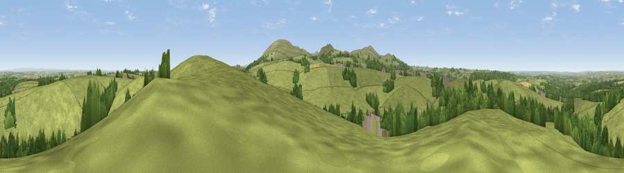

Viewpoint near Belstone
#14440 in England · top 20% of its area beats it · near BelstoneThe view, rendered

A 360° render of this exact spot computed from the terrain model, tree cover and land cover — summer colours, afternoon light, calibrated against photographs of famous viewpoints. Real trees, hedges and buildings will differ in detail.
The panorama
Grey silhouette: terrain skyline in each direction (720 bearings, Earth curvature and refraction included). Dashed green: skyline with trees (+15 m) and buildings (+8 m) as obstacles. Blue strip: how far the ground is visible on each bearing.
Where the view opens
Wedge length = distance to the farthest visible ground on that bearing (vegetation-aware). Rings at 10, 25 and 50 km.
What fills the view
82% grassland · 15% woodland · 2% cropland ·
Angular shares of the visible panorama (visual magnitude), not map area. Landscape diversity 0.24 (0–1 Shannon).
Key numbers
More beautiful places nearby
The staircase of upgrades: each row has a higher view potential than everything closer. Driving times are estimates from straight-line distance, calibrated against real road routing — check an actual route before setting out.
| Place | Direction | Drive | Score |
|---|---|---|---|
| Viewpoint near Sticklepath | ESE · 0 km | ~1 min | 63.8 |
| Viewpoint near Sticklepath | SSE · 3 km | ~8 min | 73.5 |
| Viewpoint near South Zeal | SSE · 5 km | ~11 min | 75.0 |
| Yes Tor | SSW · 7 km | ~15 min | 78.5 |
| Viewpoint near North Bovey | SE · 18 km | ~31 min | 79.3 |
| Cairn | SE · 22 km | ~37 min | 79.8 |
| Viewpoint near Haytor Vale | SE · 23 km | ~38 min | 80.1 |
| Viewpoint near Buckland in the Moor | SSE · 26 km | ~42 min | 80.7 |
50.75103, -3.95441 · source: screening · position refined by local search. Computed location — check access rights before visiting.